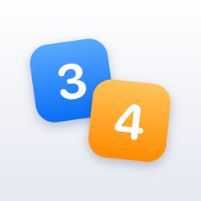

Kazu
Plier pour calculer · Fold to calculate
Disposez les tuiles numérotées sur les deux pages, refermez l'iPhone : le pli additionne, soustrait, multiplie. Sept chapitres, 56 niveaux faits main, un défi chaque jour, un mode École du CP à la 6e et des duels avec Game Center.
Place numbered tiles on both pages, close the iPhone: the fold adds, subtracts, multiplies. Seven chapters, 56 hand-made levels, a daily challenge, a School mode for ages 6 to 11, and Game Center duels.